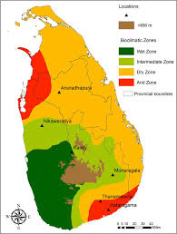

GROUP 05
Climate Zones

Wet Zone
Dry Zone
Intermediate
இலங்கையின் காலநிலை
Detailed Analysis
Reference
2021/A/497
வெப்பநிலை & மழைவீழ்ச்சி
Temperature
- பெரும்பாலான பகுதிகள்26°C – 32°C
- மலைப்பாங்கான பகுதிகள்15°C – 18°C
Humidity
- கடலோரப் பகுதிகள்70–90%
- மலைநிலப் பகுதிகள்குறைவு
பருவமழைகள்
Yala Seasonதென்மேற்கு பருவமழை
May – Sep
Maha Seasonவடகிழக்கு பருவமழை
Oct – Jan
காலநிலை வலயங்கள்
1. ஈர வலயம் (Wet Zone)
முக்கியமாக தென்மேற்குப் பருவக்காற்று மூலம் மழை. நாட்டின் அதிக சனத்தொகை. தேயிலை, இறப்பர், தென்னை, நெல் பயிர்கள்.
2. உலர் வலயம் (Dry Zone)
வடகீழ் பருவக்காற்று மூலம் மழை. இலங்கையின் 2/3 நிலப்பரப்பு. நீர்ப்பாசனக் குளங்கள் மூலம் நெற்செய்கை.
3. இடைநிலை வலயம் (Intermediate)
"அரை உலர் வலயம்". தென்னை, கரும்பு, மிளகு, கோப்பி பயிர்ச்செய்கை.
Department of GeographyUniversity of Jaffna